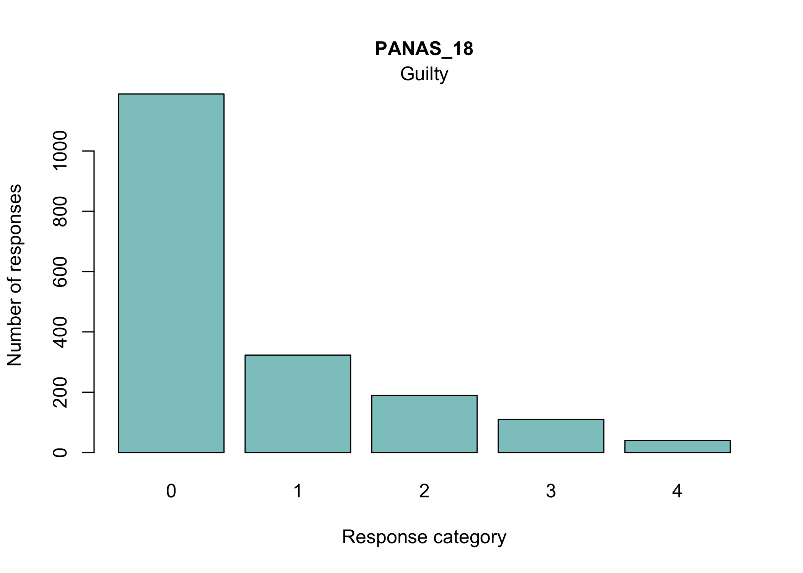
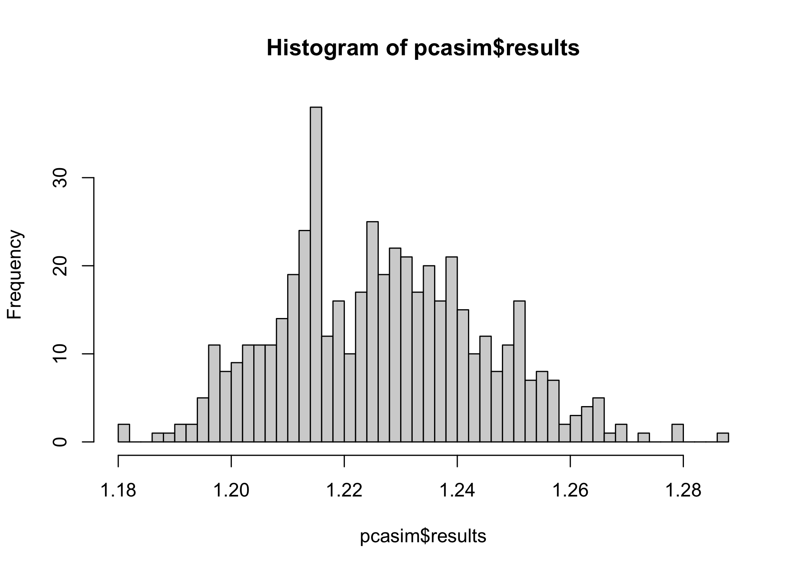
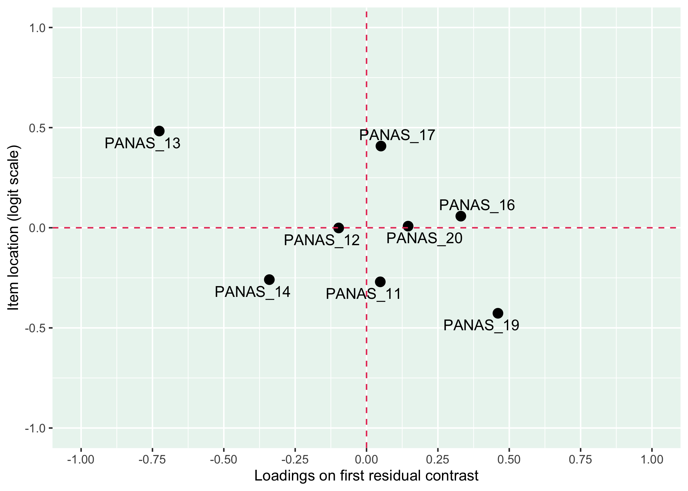
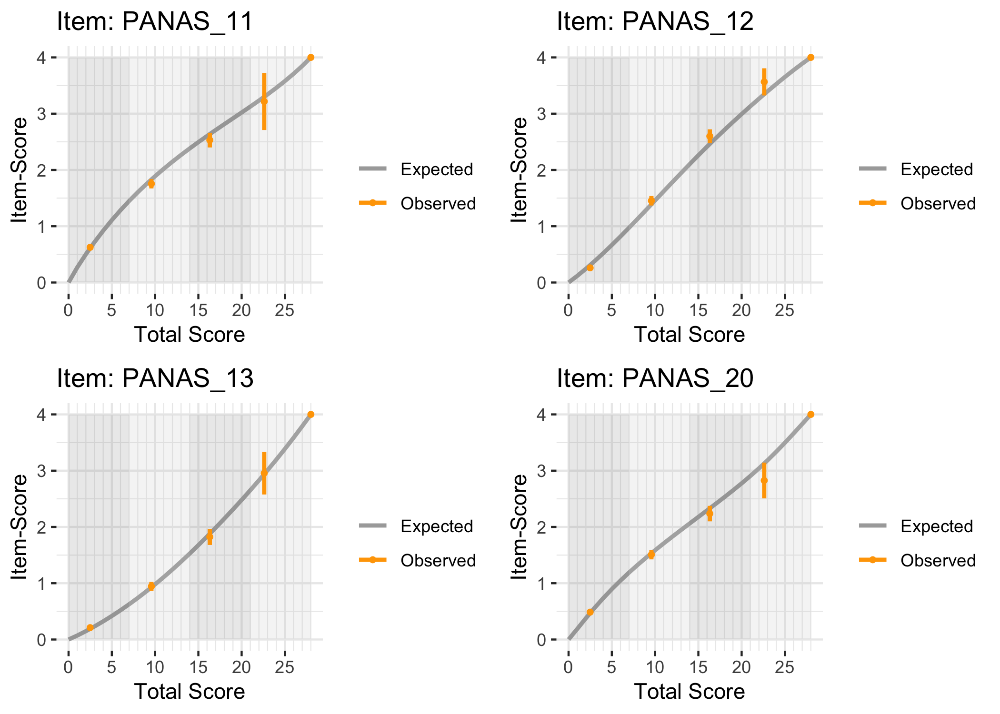

This is an introduction to using the RISEkbmRasch R package. A changelog for package updates is available here.
Details on installation are available at the package GitHub page. This vignette will walk through a sample analysis using an open dataset with polytomous questionnaire data. This will include some data wrangling to structure the item data and itemlabels, then provide examples of the different functions. The full source code of this document can be found either in this repository or by clicking on </> CODE at the top beside the table of contents. You should be able to use the source code “as is” and reproduce this document locally, as long as you have the required packages installed. This page and this website are built using the open source publishing tool Quarto.
One of the aims with this package is to simplify psychometric analysis to shed light on the measurement properties of a scale, questionnaire or test. In a paper recently made available as a preprint (Johansson et al., 2023), our research group propose that the basic aspects of a psychometric analysis should include information about:
Unidimensionality
Response categories
Invariance
Targeting
Measurement uncertainties (reliability)
We’ll include several ways to investigate these measurement properties, using Rasch Measurement Theory. There are also functions in the package less directly related to the criteria above, that will be shown in this vignette.
Please note that this is a sample analysis to showcase the R package. It is not intended as a “best practice” psychometric analysis example.
You can skip ahead to the Rasch analysis part in Section 3 if you are eager to look at the package output :)
Minimal changelog
2023-03-14, package version 0.1.12, added functions RImissing() and RIdifTable2()
2023-05-16, version 0.1.16.1, added DIF LRT functions, see Section 5.5
1 Getting started
Since the package is intended for use with Quarto, this vignette has also been created with Quarto. A “template” .qmd file is available that can be useful to have handy for copy&paste when running a new analysis. You can also download a complete copy of the Quarto/R code to produce this document here.
Loading the RISEkbmRasch package should also get all the dependencies loaded. You may need to make sure that ggplot2 is updated to version 3.4.0 or later. However, it could be desirable to explicitly load the packages used, to simplify the automatic creation of citations for them, using the grateful package.
We will use data from a recent paper investigating the “initial elevation effect” (Anvari et al., 2022), and focus on the 10 negative items from the PANAS. The data is available at the OSF website.
Code
df.all <-read_csv("https://osf.io/download/6fbr5/")# if you have issues with the link, please try downloading manually using the same URL as above# and read the file from your local drive.# subset items and demographic variablesdf <- df.all %>%select(starts_with("PANASD2_1"),starts_with("PANASD2_20"), age,Sex,Group) %>%select(!PANASD2_10_Active) %>%select(!PANASD2_1_Attentive)
The glimpse() function provides a quick overview of our dataframe.
We have 1856 rows, ie. respondents. All variables except Sex and Group are of class dbl, which means they are numeric and can have decimals. Integer (numeric with no decimals) would also be fine for our purposes. The two demographic variables currently of class chr (character) will need to be converted to factors (fct), and we will do that later on.
(If you import a dataset where item variables are of class character, you will need to recode to numeric.)
1.2 Itemlabels
Then we set up the itemlabels dataframe. This could also be done using the free LibreOffice Calc or MS Excel. Just make sure the file has the same structure, with two variables named itemnr and item that contain the item variable names and item description. The item variable names have to match the variable names in the item dataframe.
Variables for invariance tests such as Differential Item Functioning (DIF) need to be separated into vectors (ideally as factors with specified labels and levels) with the same length as the number of rows in the dataset. This means that any kind of removal of respondents with missing data needs to be done before separating the DIF variables.
Let’s first visualize the proportion of missing data on item level.
Code
RImissing(df, itemStart ="PAN")
No missing data in this dataset. We also need to check how the Sex variable has been coded and which responses are present in the data.
Code
table(df$Sex)
CONSENT REVOKED DATA EXPIRED Female Male
2 1 896 955
Prefer not to say
2
Since there are only 5 respondents using labels outside of Female/Male (too few for meaningful statistical analysis), we will remove them to have a complete dataset for all variables in this example.
Code
df <- df %>%filter(Sex %in%c("Female","Male"))
Let’s make the variable a factor (instead of character class) and put in in a vector separate from the item dataframe.
Code
dif.sex <-factor(df$Sex)
And remove our DIF demographic variable from the item dataset.
Code
df$Sex <-NULL
We can now make use of a very simple function included in this package!
Code
RIdemographics(dif.sex, "Sex")
Sex
n
Percent
Female
896
48.4
Male
955
51.6
Let’s move on to the age variable.
Code
glimpse(df$age)
num [1:1851] 27 32 21 27 20 22 23 25 21 26 ...
Sometimes age is provided in categories, but here we have a numeric variable with age in years. Let’s have a quick look at the age distribution using a histogram, and calculate mean, sd and range.
Code
### simpler version of the ggplot below# hist(df$age, col = "#009ca6")# # df %>% # summarise(Mean = round(mean(age, na.rm = T),1),# StDev = round(sd(age, na.rm = T),1)# )ggplot(df) +geom_histogram(aes(x = age), fill ="#009ca6",col ="black") +geom_vline(xintercept =mean(df$age), linewidth =1.5,linetype =2,col ="#ffe500") +annotate("rect", ymin =0, ymax =Inf, xmin = (mean(df$age) -sd(df$age)), xmax = (mean(df$age) +sd(df$age)), alpha = .3) +labs(title ="",x ="Age in years",y ="Number of respondents",caption =glue("Note. Mean age is {round(mean(df$age, na.rm = T),1)} years with a standard deviation of {round(sd(df$age, na.rm = T),1)}. Age range is {min(df$age)} to {max(df$age)}.") ) +theme(plot.caption =element_text(hjust =0, face ="italic"))
Age also needs to be a separate vector, and removed from the item dataframe.
Code
dif.age <- df$agedf$age <-NULL
There is also a grouping variable which needs to be converted to a factor.
With only item data remaining in the dataframe, we can easily rename the items in the item dataframe. These names match the itemlabels variable itemnr.
Code
names(df) <- itemlabels$itemnr
Now we are all set for the psychometric analysis!
2 Descriptives
First, let’s familiarize ourselves with the data.
2.1 Overall responses
This provides us with an overall picture of the data distribution, and any oddities/mistakes made in recoding the item data from categories to numbers will be clearly visible.
Code
RIallresp(df)
Response category
Number of responses
Percent
1
9430
50.9
2
4136
22.3
3
2676
14.5
4
1722
9.3
5
546
2.9
Most R packages for Rasch analysis require the lowest response category to be zero, which makes it necessary for us to recode our data, from 1-5 to 0-4.
Code
df <- df %>%mutate(across(everything(), ~ car::recode(.x, "1=0;2=1;3=2;4=3;5=4", as.factor = F)))# always check that your recoding worked as intended.RIallresp(df)
Response category
Number of responses
Percent
0
9430
50.9
1
4136
22.3
2
2676
14.5
3
1722
9.3
4
546
2.9
2.1.1 Floor/ceiling effects
Now, we can also look at the raw distribution of sum scores. The RIrawdist() function is a bit crude, since it requires responses in all response categories to accurately calculate max and min scores.
Code
RIrawdist(df)
We can see a floor effect with 11.8% of participants responding in the lowest category for all items.
2.1.2 Guttman structure
While not really necessary, it could be interesting to see whether the response patterns follow a Guttman-like structure. Items and persons are sorted based on lower->higher responses, and we should see the color move from yellow in the lower left corner to blue in the upper right corner.
Code
RIheatmap(df)
In this data, we see the floor effect on the left, with 11.8% of respondents all yellow, and a rather weak Guttman structure. This could also be due to a low variation in item locations/difficulties.
2.2 Item level descriptives
There are many ways to look at the item level data, and we’ll get them all together in the tab-panel below. The RItileplot() is probably most informative, since it provides the number of responses in each response category for each item. It is usually recommended to have at least ~10 responses in each category for psychometric analysis, no matter which methodology is used.
Kudos to Solomon Kurz for providing the idea and code on which the tile plot function is built!
Most people will be familiar with the barplot, and this is probably most intuitive to understand the response distribution within each item. However, if there are many items it will take a while to review, and does not provide the same overview as a tileplot or stacked bars.
Code
# This code chunk creates a small table in the margin beside the panel-tabset output below, showing all items currently in the df dataframe.# The Quarto code chunk option "#| column: margin" is necessary for the layout to work as intended.RIlistItemsMargin(df, fontsize =13)
RIbarstack(df) +theme_minimal() +# theming is optional, see section 11 for more on thistheme_rise()
Code
RIbarplot(df)

Iteration in WLE/MLE estimation 1 | Maximal change 2.949
Iteration in WLE/MLE estimation 2 | Maximal change 2.0344
Iteration in WLE/MLE estimation 3 | Maximal change 0.7294
Iteration in WLE/MLE estimation 4 | Maximal change 0.1271
Iteration in WLE/MLE estimation 5 | Maximal change 0.0034
Iteration in WLE/MLE estimation 6 | Maximal change 1e-04
Iteration in WLE/MLE estimation 7 | Maximal change 0
----
WLE Reliability= 0.761
....................................................
Plots exported in png format into folder:
/Users/magnuspjo/Library/CloudStorage/OneDrive-RISE/Dokument/R/RISEkbmRaschVignette/raschrvignette/Plots
Code
library(TAM)tam1 <-tam(as.matrix(df), irtmodel ="PCM") # run TAM Rasch Partial Credit Model on our dataplot(tam1) # create figures
The expected value curves are made using the TAM package, which uses Marginal Maximum Likelihood (MML) estimation. It is a good way to check if any of your items may need reversed response categories, amongst other things. However, it is rather verbose in its output (as you can see above), which doesn’t look very nice when used with Quarto and you only want to see the figures in your output document.
While response patterns are skewed for all items, there are more than 10 responses in each category for all items.
3 Rasch analysis 1
The eRm package and Conditional Maximum Likelihood (CML) estimation will be used primarily, with the Partial Credit Model.
We will begin by looking at unidimensionality, response categories, and targeting in parallel below. For unidimensionality, we are mostly interested in item fit and residual correlations, as well as PCA of residuals and loadings on the first residual contrast. At the same time, disordered response categories can influence item fit, and targeting can be useful if it is necessary to remove items due to residual correlations.
When unidimensionality and response categories are found to work adequately, we will move on to invariance testing. And when/if invariance looks good, we can investigate reliability/measurement uncertainties.
In the tabset-panel below, each tab will have some explanatory text.
Since we have a sample size over 500, ZSTD item fit values would be inflated if we use the whole sample. To better estimate accurate ZSTD values the RIitemfitPCM() function allows for multiple subsampling. It is recommended to use a sample size between 250 and 500 (Hagell & Westergren, 2016). We will set the sample size to 300 and run 32 subsamples. If you just want to test things out, I highly recommend lowering the number 32 to 4 to enable faster rendering.
For faster processing, RIitemfitPCM2() enables parallel processing with multiple CPUs/cores. You can check how many available cores you have by running parallel::detectCores(). It is recommended to not use all of them (leave 1 or 2 free). There may be issues with multicore parallel processing, especially when having few responses in some response categories. If you run in to errors, try increasing the sample size, or just use the single cpu/core function RIitemfitPCM() instead.
“Outfit” refers to item fit when person location is relatively far away from the item location, while “infit” provides estimates for when person and item locations are close together. MSQ should be close to 1, with lower and upper cutoffs set to 0.7 and 1.3 as default values, while ZSTD should be around 0, with default cutoffs set to +/- 2.0. Infit is usually more important. You can change the cutoff values by using options in the function, see ?RIitemfitPCM for details.
A low item fit indicates that responses are too predictable and provide little information. A high item fit can indicate several things, most often multidimensionality or, for questionnaires, a question that is difficult to interpret. This could for instance be a question that asks about two things at the same time.
Code
RIpcmPCA(df)
PCA of Rasch model residuals
Eigenvalues
1.79
1.47
1.28
1.14
1.06
The first eigenvalue should be below 2.0 to support unidimensionality.
Code
RIresidcorr(df, cutoff =0.2)
PANAS_11
PANAS_12
PANAS_13
PANAS_14
PANAS_15
PANAS_16
PANAS_17
PANAS_18
PANAS_19
PANAS_20
PANAS_11
PANAS_12
-0.1
PANAS_13
-0.05
-0.01
PANAS_14
-0.11
0.09
0.07
PANAS_15
-0.14
-0.13
-0.22
-0.29
PANAS_16
-0.17
-0.1
-0.25
-0.27
0.38
PANAS_17
-0.18
-0.09
-0.09
-0.19
-0.13
-0.08
PANAS_18
-0.19
-0.15
-0.16
-0.18
-0.15
-0.13
0.32
PANAS_19
-0.13
-0.13
-0.25
-0.14
0.1
0.08
-0.21
-0.12
PANAS_20
-0.06
-0.22
-0.07
-0.05
-0.13
-0.19
-0.16
-0.15
-0.07
Note:
Relative cut-off value (highlighted in red) is 0.098, which is 0.2 above the average correlation.
The matrix above shows item-pair correlations of item residuals, with highlights in red showing correlations 0.2 or more above the average item-pair correlation (for all item-pairs) (Christensen et al., 2017). Rasch model residual correlations are calculated using the mirt package. Again, you can set the cutoff value you desire in the function call, which will affect the values highlighted in the correlation matrix table and the caption text.
Code
RIloadLoc(df)
Here we see item locations and their loadings on the first residual contrast. This figure can be helpful to identify clusters in data or multidimensionality.
The xlims setting changes the x-axis limits for the ICC plots. The default values usually make sense, and we mostly add this option to point out the possibility of doing so. You can also choose to only show the ICC plots for specific items.
Code
RIitemCats(df, xlims =c(-5,5))
Each response category for each item should have a curve that indicates it to be the most probably response at some point on the latent variable (x axis in the figure).
Code
# increase fig-height in the chunk option above if you have many itemsRItargeting(df, xlim =c(-5,4)) # xlim defaults to c(-5,6) if you omit this option

This figure shows how well the items fit the respondents/persons. It is a sort of Wright Map that shows person locations and item threshold locations on the same logit scale.
The top part shows person location histogram, the middle part an inverted histogram of item threshold locations, and the bottom part shows individual item threshold locations. The histograms also show means and standard deviations.
Code
RIitemHierarchy(df)
Item 18 has issues with the second lowest category being disordered.
Item 15 shows low item fit.
Two item-pairs show residual correlations above the cutoff value:
15 and 16 (scared and afraid)
17 and 18 (ashamed and guilty)
Since item 15 also had low item fit, we will remove it. In the second pair, item 18 will be removed since it also had problems with disordered response categories.
While no item shows problematic levels of DIF regarding item location, as shown by the table, there is an interesting pattern in the thresholds figure. The lowest threshold seems to be slightly lower for node 3 (Male) for all items.
The results do not require any action since the difference is small.
5.2 Age
The psychotree package uses a model-based recursive partitioning that is particularly useful when you have a continuous variable such as age in years and a large enough sample. It will test different ways to partition the age variable to determine potential group differences (Strobl et al., 2015a, 2021).
Code
RIdifTable(df2, dif.age)
[1] "No significant DIF found."
No DIF found for age.
5.3 Group
Code
RIdifTable(df2, dif.group)
[1] "No significant DIF found."
And no DIF for group.
5.4 Sex and age
The psychotree package also allows for DIF interaction analysis with multiple DIF variables. We can use RIdifTable2() to input two DIF variables.
Code
RIdifTable2(df2, dif.sex, dif.age)

Item
2
3
Mean location
StDev
MaxDiff
PANAS_11
-0.314
-0.196
-0.255
0.083
0.117
PANAS_12
0.028
-0.044
-0.008
0.051
0.073
PANAS_13
0.553
0.402
0.478
0.107
0.151
PANAS_14
-0.328
-0.183
-0.255
0.103
0.146
PANAS_16
0.004
0.114
0.059
0.078
0.111
PANAS_17
0.520
0.290
0.405
0.163
0.230
PANAS_19
-0.495
-0.355
-0.425
0.099
0.140
PANAS_20
0.032
-0.028
0.002
0.042
0.059
No interaction effect found for sex and age. The analysis only shows the previously identified DIF for sex.
5.5 LRT-based DIF example
As of package version 0.1.16 there are four new functions for analyzing item location DIF. These are all making use of the function LRtest() from the eRm package. A limitation, as far as I know, is that only two groups can be used in the DIF variable.
We’ll use the group variable as an example. First, we can simply run the test to get the overall result.
The item threshold table shows us that the highest threshold for items 13 and 17 differs between groups. In this set of 8 items with 4 thresholds each, it is unlikely to result in problematic differences in estimated person scores.
6 Rasch analysis 3
While there were no significant issues with DIF for any item/subgroup combination, we need to address the previously identified problems
Items 12 and 16 are a bit low in item fit ZSTD.
Items 16 and 19 have a residual correlation at about 0.25 above the average level.
We’ll remove item 19 since item 16 has better targeting.
Relative cut-off value (highlighted in red) is 0.03, which is 0.2 above the average correlation.
Code
RItargeting(df2)
Code
RIitemHierarchy(df2)
There are several item thresholds that are very closely located, as shown in the item hierarchy figure. This is not ideal, since it will inflate reliability estimates.
However, we will not modify the response categories for this sample/simple analysis, we only note that this is not ideal.
8 Reliability
Code
RItif(df2)
While 11.8% of respondents had a floor effect based on the raw sum scored data, the figure above shows us that 41.8% are located below the point where the items produce a person separation index (reliability) of 0.7 or higher.
9 Person fit
We can also look at how the respondents fit the Rasch model with these items.
Code
RIpfit(df2)

10 Item parameters
To allow others (and oneself) to use the item parameters estimated for estimation of person locations/thetas, we should make the item parameters available. The function will also write a csv-file with the item threshold locations. Estimations of person locations/thetas can be done with the thetaEst() function from the catR package.
It can also be done by using the new (as of 2023-02-04) RIestTheta() function in this package (does not yet work with dichotomous data), which uses thetaEst() across all the participants in your dataframe.
First, we’ll output the parameters into a table.
Code
RIitemparams(df2)
Threshold 1
Threshold 2
Threshold 3
Threshold 4
Item location
PANAS_11
-1.24
-0.33
0.07
1.46
-0.01
PANAS_13
0.06
0.15
0.82
1.77
0.7
PANAS_14
-0.99
-0.26
0.12
1.12
0
PANAS_16
-0.22
-0.12
0.21
1.32
0.3
PANAS_17
0.29
0.31
0.73
1.17
0.62
PANAS_20
-0.89
-0.29
0.63
1.57
0.25
RIitemparams() will automatically write a CSV-file called “itemParameters.csv”. The filename can be specified manually.
10.1 Ordinal sum score to interval score
This table shows the corresponding sum score values and logit scores, with standard errors for each logit value.
Code
RIscoreSE(df2)
Ordinal sum score
Logit score
Logit std.error
0
-3.21
NA
1
-2.45
1.00
2
-1.76
0.71
3
-1.35
0.58
4
-1.05
0.51
5
-0.82
0.46
6
-0.62
0.43
7
-0.44
0.41
8
-0.28
0.39
9
-0.13
0.38
10
0.01
0.37
11
0.15
0.37
12
0.28
0.37
13
0.42
0.37
14
0.56
0.38
15
0.71
0.39
16
0.86
0.40
17
1.03
0.42
18
1.22
0.45
19
1.43
0.48
20
1.68
0.53
21
2.01
0.61
22
2.45
0.73
23
3.18
1.02
24
3.98
NA
10.2 Estimating interval level person scores
Based on the Rasch analysis output of item parameters, we can estimate each individuals location or score (also known as “theta”). Similarly to the RIitemfitPCM() function there is also a parallel processing version of the function available, which makes use of 4 cores by default.
RIestThetas() by default uses WL estimation of a partial credit model and outputs a vector of person locations on the logit scale. If you do not supply a matrix of item (threshold) locations, it will use eRm’s CML PCM to calculate it based on the dataframe input.
Code
library(furrr) # for a parallel processing version of purrr::map_dbldf2$PersonScores <-RIestThetas2(df2, cpu =8)
RIestThetas() can also be used with a pre-specified item (threshold) location matrix. The choice of WL as default is due to the lower bias compared to ML estimation (Warm, 1989).
If you would like to use an existing item matrix, this code may be helpful:
As you can see, this is a matrix object (not a dataframe), with each item as a row, and the threshold locations as columns.
Finally, we’ll look at the distribution of person scores using a simple histogram.
Code
hist(df2$PersonScores, col ="#009ca6")
11 Fonts and themes
Most of the figures created by the functions can be styled by adding theme settings to them. You can use the standard ggplot function theme() and related theme-functions. As usual it is possible to “stack” theme functions, as seen in the example below.
A custom theme function, theme_rise(), is included in the RISEkbmRasch package. It might be easier to use if you are not familiar with theme().
For instance, you might like to change the font to “Lato” for the item hierarchy figure, and make the background transparent.
Code
# first we need to remove the `PersonScores` variable from the `df2` dataframe, to ensure that `df2` contains only item data before using it with the item hierarchy function.df2$PersonScores <-NULLRIitemHierarchy(df2) +theme_minimal() +# first apply the minimal theme to make the background transparenttheme_rise(fontfamily ="Lato") # then apply theme_rise, which simplifies making changes to all plot elements
In order to change font for text inside plots you will need to add an additional line of code.
update_geom_defaults("text", list(family ="Lato))
Please note that this updates the default settings for geom_text() for the whole session. Also, some functions, such as RIloadLoc() make use of geom_text_repel(), for which you would need to change the function above from “text” to “text_repel”.
A simple way to only change font family and font size would be to use theme_minimal(base_family = "Calibri", base_size = 14). Please see the reference page for default ggplot themes for alternatives to theme_minimal().
12 Software used
The grateful package is a nice way to give credit to the packages used in making the analysis. The package can create both a bibliography file and a table object, which is handy for automatically creating a reference list based on the packages used (or at least explicitly loaded).
Code
library(grateful)pkgs <-cite_packages(cite.tidyverse =TRUE, output ="table",bib.file ="grateful-refs.bib",include.RStudio =TRUE,out.dir =getwd())# If kbl() is used to generate this table, the references will not be added to the Reference list.formattable(pkgs, table.attr ='class=\"table table-striped\" style="font-size: 13px; font-family: Lato; width: 80%"')
Thanks to my colleagues at RISE for providing feedback and testing the package on Windows and MacOS platforms. Also, thanks to Mike Linacre and Jeanette Melin for providing useful feedback to improve this vignette.
14 References
Allaire, J., Xie, Y., Dervieux, C., McPherson, J., Luraschi, J., Ushey, K., Atkins, A., Wickham, H., Cheng, J., Chang, W., & Iannone, R. (2023). rmarkdown: Dynamic documents for r. https://github.com/rstudio/rmarkdown
Anvari, F., Efendić, E., Olsen, J., Arslan, R. C., Elson, M., & Schneider, I. K. (2022). Bias in Self-Reports: An Initial Elevation Phenomenon. Social Psychological and Personality Science, 19485506221129160. https://doi.org/10.1177/19485506221129160
Chalmers, R. P. (2012). mirt: A multidimensional item response theory package for the R environment. Journal of Statistical Software, 48(6), 1–29. https://doi.org/10.18637/jss.v048.i06
Christensen, K. B., Makransky, G., & Horton, M. (2017). Critical Values for Yen’s Q3: Identification of Local Dependence in the Rasch Model Using Residual Correlations. Applied Psychological Measurement, 41(3), 178–194. https://doi.org/10.1177/0146621616677520
Debelak, R., & Koller, I. (2019). Testing the Local Independence Assumption of the Rasch Model With Q3-Based Nonparametric Model Tests. Applied Psychological Measurement. https://doi.org/10.1177/0146621619835501
Hagell, P., & Westergren, A. (2016). Sample size and statistical conclusions from tests of fit to the rasch model according to the rasch unidimensional measurement model (RUMM) program in health outcome measurement. Journal of Applied Measurement, 17(4), 416–431.
Hatzinger, R., & Rusch, T. (2009). IRT models with relaxed assumptions in eRm: A manual-like instruction. Psychology Science Quarterly, 51.
Johansson, M., Preuter, M., Karlsson, S., Möllerberg, M.-L., Svensson, H., & Melin, J. (2023). Valid and reliable? Basic and expanded recommendations for psychometric reporting and quality assessment.https://doi.org/10.31219/osf.io/3htzc
Koller, I., Maier, M. J., & Hatzinger, R. (2015). An Empirical Power Analysis of Quasi-Exact Tests for the Rasch Model: Measurement Invariance in Small Samples. Methodology, 11. https://doi.org/10.1027/1614-2241/a000090
Komboz, B., Zeileis, A., & Strobl, C. (2018). Tree-based global model tests for polytomous Rasch models. Educational and Psychological Measurement, 78(1), 128–166. https://doi.org/10.1177/0013164416664394
Mair, P., & Hatzinger, R. (2007a). CML based estimation of extended Rasch models with the eRm package in R. Psychology Science, 49.
Mair, P., & Hatzinger, R. (2007b). Extended Rasch modeling: The eRm package for the application of IRT models in R. Journal of Statistical Software, 20. https://www.jstatsoft.org/v20/i09
Rusch, T., Maier, M. J., & Hatzinger, R. (2013). Linear logistic models with relaxed assumptions in R. In B. Lausen, D. van den Poel, & A. Ultsch (Eds.), Algorithms from and for Nature and Life. Springer. https://doi.org/10.1007/978-3-319-00035-0_34
Strobl, C., Kopf, J., & Zeileis, A. (2015a). Rasch Trees: A New Method for Detecting Differential Item Functioning in the Rasch Model. Psychometrika, 80(2), 289–316. https://doi.org/10.1007/s11336-013-9388-3
Strobl, C., Kopf, J., & Zeileis, A. (2015b). Rasch trees: A new method for detecting differential item functioning in the Rasch model. Psychometrika, 80(2), 289–316. https://doi.org/10.1007/s11336-013-9388-3
Strobl, C., Schneider, L., Kopf, J., & Zeileis, A. (2021). Using the raschtree function for detecting differential item functioning in the Rasch model. 12.
Strobl, C., Wickelmaier, F., & Zeileis, A. (2011). Accounting for individual differences in Bradley-Terry models by means of recursive partitioning. Journal of Educational and Behavioral Statistics, 36(2), 135–153. https://doi.org/10.3102/1076998609359791
Trepte, S., & Verbeet, M. (Eds.). (2010). Allgemeinbildung in Deutschland – erkenntnisse aus dem SPIEGELStudentenpisa-Test. VS Verlag.
Warm, T. A. (1989). Weighted likelihood estimation of ability in item response theory. Psychometrika, 54(3), 427–450. https://doi.org/10.1007/BF02294627
Wickelmaier, F., & Zeileis, A. (2018). Using recursive partitioning to account for parameter heterogeneity in multinomial processing tree models. Behavior Research Methods, 50(3), 1217–1233. https://doi.org/10.3758/s13428-017-0937-z
Wickham, H. (2007). Reshaping data with the reshape package. Journal of Statistical Software, 21(12). https://www.jstatsoft.org/v21/i12/
Wickham, H., Averick, M., Bryan, J., Chang, W., McGowan, L. D., François, R., Grolemund, G., Hayes, A., Henry, L., Hester, J., Kuhn, M., Pedersen, T. L., Miller, E., Bache, S. M., Müller, K., Ooms, J., Robinson, D., Seidel, D. P., Spinu, V., … Yutani, H. (2019). Welcome to the tidyverse. Journal of Open Source Software, 4(43), 1686. https://doi.org/10.21105/joss.01686
William Revelle. (2023). psych: Procedures for psychological, psychometric, and personality research. Northwestern University. https://CRAN.R-project.org/package=psych
Xie, Y. (2014). knitr: A comprehensive tool for reproducible research in R. In V. Stodden, F. Leisch, & R. D. Peng (Eds.), Implementing reproducible computational research. Chapman; Hall/CRC.
Xie, Y. (2015). Dynamic documents with R and knitr (2nd ed.). Chapman; Hall/CRC. https://yihui.org/knitr/
Xie, Y. (2023). knitr: A general-purpose package for dynamic report generation in r. https://yihui.org/knitr/
---title: "RISEkbmRasch vignette"subtitle: "An R package for Rasch analysis"author: name: Magnus Johansson affiliation: RISE Research Institutes of Sweden affiliation-url: https://www.ri.se/sv/vad-vi-gor/expertiser/kategoriskt-baserade-matningar orcid: 0000-0003-1669-592Xdate: last-modifiedgoogle-scholar: truecitation: truewebsite: open-graph: image: "/RaschRvign_files/figure-html/unnamed-chunk-34-1.png"execute: cache: true warning: false message: falsebibliography:- references.bib- grateful-refs.bibcsl: apa.csleditor_options: chunk_output_type: console---This is an introduction to using the [RISEkbmRasch R package](https://github.com/pgmj/RISEkbmRasch). A changelog for package updates is available [here](https://github.com/pgmj/RISEkbmRasch/blob/main/NEWS.md).Details on installation are available at the [package GitHub page](https://github.com/pgmj/RISEkbmRasch). This vignette will walk through a sample analysis using an open dataset with polytomous questionnaire data. This will include some data wrangling to structure the item data and itemlabels, then provide examples of the different functions. The full source code of this document can be found either [in this repository](https://github.com/pgmj/pgmj.github.io/blob/main/raschrvignette/RaschRvign.qmd) or by clicking on **\</\> CODE** at the top beside the table of contents. You should be able to use the source code "as is" and reproduce this document locally, as long as you have the required packages installed. This page and this website are built using the open source publishing tool [Quarto](https://www.quarto.org).One of the aims with this package is to simplify psychometric analysis to shed light on the measurement properties of a scale, questionnaire or test. In a paper recently made available as a preprint [@johansson], our [research group](https://www.ri.se/en/what-we-do/projects/center-for-categorically-based-measurements) propose that the basic aspects of a psychometric analysis should include information about:- Unidimensionality- Response categories- Invariance- Targeting- Measurement uncertainties (reliability)We'll include several ways to investigate these measurement properties, using Rasch Measurement Theory. There are also functions in the package less directly related to the criteria above, that will be shown in this vignette.Please note that this is a sample analysis to showcase the R package. It is not intended as a "best practice" psychometric analysis example.You can skip ahead to the Rasch analysis part in @sec-rasch if you are eager to look at the package output :)::: {.callout-note icon="false"}## Minimal changelog- 2023-03-14, package version 0.1.12, added functions `RImissing()` and `RIdifTable2()`- 2023-05-16, version 0.1.16.1, added DIF LRT functions, see @sec-diflrt:::## Getting startedSince the package is intended for use with Quarto, this vignette has also been created with Quarto. A "template" .qmd file [is available](https://github.com/pgmj/RISEkbmRasch/blob/main/Quarto/RISEkbmRasch%20Quarto%20template.qmd) that can be useful to have handy for copy&paste when running a new analysis. You can also download a complete copy of the Quarto/R code to produce this document [here](https://github.com/pgmj/pgmj.github.io/blob/main/raschrvignette/RaschRvign.qmd).Loading the `RISEkbmRasch` package should also get all the dependencies loaded. You may need to make sure that ggplot2 is updated to version 3.4.0 or later. However, it could be desirable to explicitly load the packages used, to simplify the automatic creation of citations for them, using the `grateful` package.```{r}library(RISEkbmRasch) # devtools::install_github("pgmj/RISEkbmRasch")library(grateful)library(ggrepel)library(car)library(kableExtra)library(readxl)library(tidyverse)library(eRm)library(mirt)library(psych)library(ggplot2)library(psychotree)library(matrixStats)library(reshape)library(knitr)library(cowplot)library(formattable) library(glue)library(foreach)```### Loading dataWe will use data from a recent paper investigating the "initial elevation effect" [@anvari2022], and focus on the 10 negative items from the PANAS. The data is available at the OSF website.```{r}df.all <-read_csv("https://osf.io/download/6fbr5/")# if you have issues with the link, please try downloading manually using the same URL as above# and read the file from your local drive.# subset items and demographic variablesdf <- df.all %>%select(starts_with("PANASD2_1"),starts_with("PANASD2_20"), age,Sex,Group) %>%select(!PANASD2_10_Active) %>%select(!PANASD2_1_Attentive)```The `glimpse()` function provides a quick overview of our dataframe.```{r}glimpse(df)```We have `r nrow(df)` rows, ie. respondents. All variables except Sex and Group are of class `dbl`, which means they are numeric and can have decimals. Integer (numeric with no decimals) would also be fine for our purposes. The two demographic variables currently of class `chr` (character) will need to be converted to factors (`fct`), and we will do that later on.(If you import a dataset where item variables are of class character, you will need to recode to numeric.)### ItemlabelsThen we set up the itemlabels dataframe. This could also be done using the free [LibreOffice Calc](https://www.libreoffice.org/download/download-libreoffice/) or MS Excel. Just make sure the file has the same structure, with two variables named `itemnr` and `item` that contain the item variable names and item description. The item variable names have to match the variable names in the item dataframe.```{r}itemlabels <- df %>%select(starts_with("PAN")) %>%names() %>%as_tibble() %>%separate(value, c(NA, "item"), sep ="_[0-9][0-9]_") %>%mutate(itemnr =paste0("PANAS_",c(11:20)), .before ="item")```The `itemlabels` dataframe looks like this.```{r}itemlabels```### DemographicsVariables for invariance tests such as Differential Item Functioning (DIF) need to be separated into vectors (ideally as factors with specified labels and levels) with the same length as the number of rows in the dataset. This means that any kind of removal of respondents with missing data needs to be done before separating the DIF variables.Let's first visualize the proportion of missing data on item level.```{r}RImissing(df, itemStart ="PAN")```No missing data in this dataset. We also need to check how the `Sex` variable has been coded and which responses are present in the data.```{r}table(df$Sex)```Since there are only 5 respondents using labels outside of Female/Male (too few for meaningful statistical analysis), we will remove them to have a complete dataset for all variables in this example.```{r}df <- df %>%filter(Sex %in%c("Female","Male"))```Let's make the variable a factor (instead of character class) and put in in a vector separate from the item dataframe.```{r}dif.sex <-factor(df$Sex)```And remove our DIF demographic variable from the item dataset.```{r}df$Sex <-NULL```We can now make use of a very simple function included in this package!```{r}RIdemographics(dif.sex, "Sex")```Let's move on to the age variable.```{r}glimpse(df$age)```Sometimes age is provided in categories, but here we have a numeric variable with age in years. Let's have a quick look at the age distribution using a histogram, and calculate mean, sd and range.```{r}### simpler version of the ggplot below# hist(df$age, col = "#009ca6")# # df %>% # summarise(Mean = round(mean(age, na.rm = T),1),# StDev = round(sd(age, na.rm = T),1)# )ggplot(df) +geom_histogram(aes(x = age), fill ="#009ca6",col ="black") +geom_vline(xintercept =mean(df$age), linewidth =1.5,linetype =2,col ="#ffe500") +annotate("rect", ymin =0, ymax =Inf, xmin = (mean(df$age) -sd(df$age)), xmax = (mean(df$age) +sd(df$age)), alpha = .3) +labs(title ="",x ="Age in years",y ="Number of respondents",caption =glue("Note. Mean age is {round(mean(df$age, na.rm = T),1)} years with a standard deviation of {round(sd(df$age, na.rm = T),1)}. Age range is {min(df$age)} to {max(df$age)}.") ) +theme(plot.caption =element_text(hjust =0, face ="italic"))```Age also needs to be a separate vector, and removed from the item dataframe.```{r}dif.age <- df$agedf$age <-NULL```There is also a grouping variable which needs to be converted to a factor.```{r}dif.group <-factor(df$Group)df$Group <-NULLRIdemographics(dif.group, "Group")```With only item data remaining in the dataframe, we can easily rename the items in the item dataframe. These names match the `itemlabels` variable `itemnr`.```{r}names(df) <- itemlabels$itemnr```Now we are all set for the psychometric analysis!## DescriptivesFirst, let's familiarize ourselves with the data.### Overall responsesThis provides us with an overall picture of the data distribution, and any oddities/mistakes made in recoding the item data from categories to numbers will be clearly visible.```{r}RIallresp(df)```Most R packages for Rasch analysis require the lowest response category to be zero, which makes it necessary for us to recode our data, from 1-5 to 0-4.```{r}df <- df %>%mutate(across(everything(), ~ car::recode(.x, "1=0;2=1;3=2;4=3;5=4", as.factor = F)))# always check that your recoding worked as intended.RIallresp(df)```#### Floor/ceiling effectsNow, we can also look at the raw distribution of sum scores. The `RIrawdist()` function is a bit crude, since it requires responses in all response categories to accurately calculate max and min scores.```{r}RIrawdist(df)```We can see a floor effect with 11.8% of participants responding in the lowest category for all items.#### Guttman structureWhile not really necessary, it could be interesting to see whether the response patterns follow a Guttman-like structure. Items and persons are sorted based on lower-\>higher responses, and we should see the color move from yellow in the lower left corner to blue in the upper right corner.```{r}RIheatmap(df)```In this data, we see the floor effect on the left, with 11.8% of respondents all yellow, and a rather weak Guttman structure. This could also be due to a low variation in item locations/difficulties.### Item level descriptivesThere are many ways to look at the item level data, and we'll get them all together in the tab-panel below. The `RItileplot()` is probably most informative, since it provides the number of responses in each response category for each item. It is usually recommended to have at least \~10 responses in each category for psychometric analysis, no matter which methodology is used.Kudos to [Solomon Kurz](https://solomonkurz.netlify.app/blog/2021-05-11-yes-you-can-fit-an-exploratory-factor-analysis-with-lavaan/) for providing the idea and code on which the tile plot function is built!Most people will be familiar with the barplot, and this is probably most intuitive to understand the response distribution within each item. However, if there are many items it will take a while to review, and does not provide the same overview as a tileplot or stacked bars.```{r}#| column: margin#| code-fold: true# This code chunk creates a small table in the margin beside the panel-tabset output below, showing all items currently in the df dataframe.# The Quarto code chunk option "#| column: margin" is necessary for the layout to work as intended.RIlistItemsMargin(df, fontsize =13)```::: column-page-left::: panel-tabset#### Tile plot```{r}RItileplot(df)```#### Stacked bars```{r}RIbarstack(df) +theme_minimal() +# theming is optional, see section 11 for more on thistheme_rise() ```#### Barplots```{r}#| layout-ncol: 2RIbarplot(df)```#### Expected Value Curves```{r}#| include: falselibrary(TAM) # This and the next code chunk is a bit of tinkering to minimize the output from the TAM functions. The third one is only to show the code in the Quarto output.tam1 <-tam(as.matrix(df), irtmodel ="PCM") # run TAM Rasch Partial Credit Model on our data``````{r}#| layout-ncol: 2#| echo: falseplot(tam1) # create figures``````{r}#| eval: falselibrary(TAM)tam1 <-tam(as.matrix(df), irtmodel ="PCM") # run TAM Rasch Partial Credit Model on our dataplot(tam1) # create figures```The expected value curves are made using the [TAM](https://cran.r-project.org/web/packages/TAM/index.html) package, which uses Marginal Maximum Likelihood (MML) estimation. It is a good way to check if any of your items may need reversed response categories, amongst other things. However, it is rather verbose in its output (as you can see above), which doesn't look very nice when used with Quarto and you only want to see the figures in your output document.::::::While response patterns are skewed for all items, there are more than 10 responses in each category for all items.## Rasch analysis 1 {#sec-rasch}The eRm package and Conditional Maximum Likelihood (CML) estimation will be used primarily, with the Partial Credit Model.This is also where the [five basic psychometric aspects](https://doi.org/10.31219/osf.io/3htzc) are good to recall.- Unidimensionality- Response categories- Invariance- Targeting- Measurement uncertainties (reliability)We will begin by looking at unidimensionality, response categories, and targeting in parallel below. For unidimensionality, we are mostly interested in item fit and residual correlations, as well as PCA of residuals and loadings on the first residual contrast. At the same time, disordered response categories can influence item fit, and targeting can be useful if it is necessary to remove items due to residual correlations.When unidimensionality and response categories are found to work adequately, we will move on to invariance testing. And when/if invariance looks good, we can investigate reliability/measurement uncertainties.In the tabset-panel below, each tab will have some explanatory text.```{r}#| column: margin#| echo: falseRIlistItemsMargin(df, fontsize =13)```::: column-page-left::: panel-tabset### Item fit {.smaller}```{r}RIitemfitPCM2(df, 300, 32, cpu =8)```Since we have a sample size over 500, ZSTD item fit values would be inflated if we use the whole sample. To better estimate accurate ZSTD values the `RIitemfitPCM()` function allows for multiple subsampling. It is recommended to use a sample size between 250 and 500 [@hagell2016]. We will set the sample size to 300 and run 32 subsamples. If you just want to test things out, I highly recommend lowering the number 32 to 4 to enable faster rendering.For faster processing, `RIitemfitPCM2()` enables parallel processing with multiple CPUs/cores. You can check how many available cores you have by running `parallel::detectCores()`. It is recommended to not use all of them (leave 1 or 2 free). There may be issues with multicore parallel processing, especially when having few responses in some response categories. If you run in to errors, try increasing the sample size, or just use the single cpu/core function `RIitemfitPCM()` instead."Outfit" refers to item fit when person location is relatively far away from the item location, while "infit" provides estimates for when person and item locations are close together. MSQ should be close to 1, with lower and upper cutoffs set to 0.7 and 1.3 as default values, while ZSTD should be around 0, with default cutoffs set to +/- 2.0. Infit is usually more important. You can change the cutoff values by using options in the function, see `?RIitemfitPCM` for details.A low item fit indicates that responses are too predictable and provide little information. A high item fit can indicate several things, most often multidimensionality or, for questionnaires, a question that is difficult to interpret. This could for instance be a question that asks about two things at the same time.### PCA```{r}#| tbl-cap: "PCA of Rasch model residuals"RIpcmPCA(df)```The first eigenvalue should be below 2.0 to support unidimensionality.### Residual correlations```{r}RIresidcorr(df, cutoff =0.2)```The matrix above shows item-pair correlations of item residuals, with highlights in red showing correlations 0.2 or more above the average item-pair correlation (for all item-pairs) [@christensen2017]. Rasch model residual correlations are calculated using the [mirt](https://cran.r-project.org/web/packages/mirt/index.html) package. Again, you can set the cutoff value you desire in the function call, which will affect the values highlighted in the correlation matrix table and the caption text.### 1st contrast loadings```{r}RIloadLoc(df)```Here we see item locations and their loadings on the first residual contrast. This figure can be helpful to identify clusters in data or multidimensionality.### Analysis of response categoriesThe `xlims` setting changes the x-axis limits for the ICC plots. The default values usually make sense, and we mostly add this option to point out the possibility of doing so. You can also choose to only show the ICC plots for specific items.```{r}#| layout-ncol: 2RIitemCats(df, xlims =c(-5,5))```Each response category for each item should have a curve that indicates it to be the most probably response at some point on the latent variable (x axis in the figure).### Targeting```{r}#| fig-height: 6# increase fig-height in the chunk option above if you have many itemsRItargeting(df, xlim =c(-5,4)) # xlim defaults to c(-5,6) if you omit this option```This figure shows how well the items fit the respondents/persons. It is a sort of [Wright Map](https://www.rasch.org/rmt/rmt253b.htm) that shows person locations and item threshold locations on the same logit scale.The top part shows person location histogram, the middle part an inverted histogram of item threshold locations, and the bottom part shows individual item threshold locations. The histograms also show means and standard deviations.### Item hierarchy```{r}#| fig-height: 5RIitemHierarchy(df)```::::::Item 18 has issues with the second lowest category being disordered.Item 15 shows low item fit.Two item-pairs show residual correlations above the cutoff value:- 15 and 16 (scared and afraid)- 17 and 18 (ashamed and guilty)Since item 15 also had low item fit, we will remove it. In the second pair, item 18 will be removed since it also had problems with disordered response categories.```{r}removed.items <-c("PANAS_15","PANAS_18")df2 <- df %>%select(!any_of(removed.items))```## Rasch analysis 2With items 15 and 18 removed.```{r}#| column: margin#| echo: falseRIlistItemsMargin(df2, fontsize =13)```::: column-page-left::: panel-tabset### Item fit {.smaller}```{r}RIitemfitPCM2(df2, 300, 32, cpu =8)```### PCA```{r}#| tbl-cap: "PCA of Rasch model residuals"RIpcmPCA(df2)```### Residual correlations```{r}RIresidcorr(df2, cutoff =0.2)```### 1st contrast loadings```{r}RIloadLoc(df2)```### Targeting```{r}#| fig-height: 5# increase fig-height above as needed, if you have many itemsRItargeting(df2)```### Item hierarchy```{r}#| fig-height: 5RIitemHierarchy(df2)```::::::Items 12 and 16 are a bit low in item fit ZSTD.Items 16 and 19 have a residual correlation at about 0.25 above the average level.Let's look at DIF before taking action upon this information.## DIF - differential item functioningWe'll be looking at how/if item (threshold) locations are stable between demographic subgroups.### Sex```{r}#| column: margin#| echo: falseRIlistItemsMargin(df2, fontsize =13)```::: panel-tabset#### Table```{r}#| fig-height: 3RIdifTable(df2, dif.sex)```#### Figure items```{r}RIdifFigure(df2, dif.sex)```#### Figure thresholds```{r}RIdifFigThresh(df2, dif.sex)```:::While no item shows problematic levels of DIF regarding item location, as shown by the table, there is an interesting pattern in the thresholds figure. The lowest threshold seems to be slightly lower for node 3 (Male) for all items.The results do not require any action since the difference is small.### AgeThe `psychotree` package uses a model-based recursive partitioning that is particularly useful when you have a continuous variable such as age in years and a large enough sample. It will test different ways to partition the age variable to determine potential group differences [@strobl2015; @strobl2021].```{r}RIdifTable(df2, dif.age)```No DIF found for age.### Group```{r}RIdifTable(df2, dif.group)```And no DIF for group.### Sex and ageThe `psychotree` package also allows for DIF interaction analysis with multiple DIF variables. We can use `RIdifTable2()` to input two DIF variables.```{r}RIdifTable2(df2, dif.sex, dif.age)```No interaction effect found for sex and age. The analysis only shows the previously identified DIF for sex.### LRT-based DIF example {#sec-diflrt}As of package version 0.1.16 there are four new functions for analyzing item location DIF. These are all making use of the function `LRtest()` from the `eRm` package. A limitation, as far as I know, is that only two groups can be used in the DIF variable.We'll use the group variable as an example. First, we can simply run the test to get the overall result.```{r}erm.out <-PCM(df2)LRtest(erm.out, splitcr = dif.group)``````{r}#| column: margin#| echo: falseRIlistItemsMargin(df2, fontsize =13)```::: panel-tabset#### Item location table```{r}RIdifTableLR(df2, dif.group)```#### Item location figure```{r}RIdifFigureLR(df2, dif.group)```#### Item threshold table```{r}RIdifThreshTblLR(df2, dif.group)```#### Item threshold figure```{r}RIdifThreshFigLR(df2, dif.group)```:::The item threshold table shows us that the highest threshold for items 13 and 17 differs between groups. In this set of 8 items with 4 thresholds each, it is unlikely to result in problematic differences in estimated person scores.## Rasch analysis 3While there were no significant issues with DIF for any item/subgroup combination, we need to address the previously identified problemsItems 12 and 16 are a bit low in item fit ZSTD.Items 16 and 19 have a residual correlation at about 0.25 above the average level.We'll remove item 19 since item 16 has better targeting.```{r}removed.items <-c(removed.items,"PANAS_19")df2 <- df2 %>%select(!any_of(removed.items))``````{r}#| column: margin#| echo: falseRIlistItemsMargin(df2, fontsize =13)```::: column-page-left::: panel-tabset### Item fit {.smaller}```{r}RIitemfitPCM2(df2, 300, 32, 8)```### Residual correlations```{r}RIresidcorr(df2, cutoff =0.2)```### Targeting```{r}#| fig-height: 5RItargeting(df2)```### Item hierarchy```{r}#| fig-height: 5RIitemHierarchy(df2)```::::::No problematic residual correlations, but item 12 is a bit low in item fit.## Rasch analysis 4```{r}removed.items <-c(removed.items,"PANAS_12")df2 <- df2 %>%select(!any_of(removed.items))``````{r}#| column: margin#| echo: falseRIlistItemsMargin(df2, fontsize =13)```::: column-page-left::: panel-tabset### Item fit {.smaller}```{r}RIitemfitPCM2(df2, 300, 32, 8)```### Residual correlations```{r}RIresidcorr(df2, cutoff =0.2)```### Targeting```{r}#| fig-height: 5RItargeting(df2)```### Item hierarchy```{r}#| fig-height: 5RIitemHierarchy(df2)```::::::There are several item thresholds that are very closely located, as shown in the item hierarchy figure. This is not ideal, since it will inflate reliability estimates.However, we will not modify the response categories for this sample/simple analysis, we only note that this is not ideal.## Reliability```{r}RItif(df2)```While 11.8% of respondents had a floor effect based on the raw sum scored data, the figure above shows us that 41.8% are located below the point where the items produce a person separation index (reliability) of 0.7 or higher.## Person fitWe can also look at how the respondents fit the Rasch model with these items.```{r}RIpfit(df2)```## Item parametersTo allow others (and oneself) to use the item parameters estimated for estimation of person locations/thetas, we should make the item parameters available. The function will also write a csv-file with the item threshold locations. Estimations of person locations/thetas can be done with the `thetaEst()` function from the `catR` package.It can also be done by using the new (as of 2023-02-04) `RIestTheta()` function in this package (does not yet work with dichotomous data), which uses `thetaEst()` across all the participants in your dataframe.First, we'll output the parameters into a table.```{r}RIitemparams(df2)````RIitemparams()` will automatically write a CSV-file called "itemParameters.csv". The filename can be specified manually.### Ordinal sum score to interval scoreThis table shows the corresponding sum score values and logit scores, with standard errors for each logit value.```{r}RIscoreSE(df2)```### Estimating interval level person scoresBased on the Rasch analysis output of item parameters, we can estimate each individuals location or score (also known as "theta"). Similarly to the `RIitemfitPCM()` function there is also a parallel processing version of the function available, which makes use of 4 cores by default.`RIestThetas()` by default uses WL estimation of a partial credit model and outputs a vector of person locations on the logit scale. If you do not supply a matrix of item (threshold) locations, it will use eRm's CML PCM to calculate it based on the dataframe input.```{r}library(furrr) # for a parallel processing version of purrr::map_dbldf2$PersonScores <-RIestThetas2(df2, cpu =8)````RIestThetas()` can also be used with a pre-specified item (threshold) location matrix. The choice of WL as default is due to the lower bias compared to ML estimation [@warm1989].If you would like to use an existing item matrix, this code may be helpful:```{r}items <-as.matrix(read.csv("itemParameters.csv"))items```As you can see, this is a matrix object (not a dataframe), with each item as a row, and the threshold locations as columns.Finally, we'll look at the distribution of person scores using a simple histogram.```{r}hist(df2$PersonScores, col ="#009ca6")```## Fonts and themesMost of the figures created by the functions can be styled by adding theme settings to them. You can use the standard ggplot function `theme()` and related theme-functions. As usual it is possible to "stack" theme functions, as seen in the example below.A custom theme function, `theme_rise()`, is included in the RISEkbmRasch package. It might be easier to use if you are not familiar with `theme()`.For instance, you might like to change the font to "Lato" for the item hierarchy figure, and make the background transparent.```{r}# first we need to remove the `PersonScores` variable from the `df2` dataframe, to ensure that `df2` contains only item data before using it with the item hierarchy function.df2$PersonScores <-NULLRIitemHierarchy(df2) +theme_minimal() +# first apply the minimal theme to make the background transparenttheme_rise(fontfamily ="Lato") # then apply theme_rise, which simplifies making changes to all plot elements```In order to change font for text inside plots you will need to add an additional line of code.``` rupdate_geom_defaults("text", list(family ="Lato))```Please note that this updates the default settings for `geom_text()` for the whole session. Also, some functions, such as `RIloadLoc()` make use of `geom_text_repel()`, for which you would need to change the function above from "text" to "text_repel".A simple way to only change font family and font size would be to use `theme_minimal(base_family = "Calibri", base_size = 14)`. Please see the [reference page](https://ggplot2.tidyverse.org/reference/ggtheme.html) for default ggplot themes for alternatives to `theme_minimal()`.## Software usedThe `grateful` package is a nice way to give credit to the packages used in making the analysis. The package can create both a bibliography file and a table object, which is handy for automatically creating a reference list based on the packages used (or at least explicitly loaded).```{r}library(grateful)pkgs <- cite_packages(cite.tidyverse = TRUE, output = "table", bib.file = "grateful-refs.bib", include.RStudio = TRUE, out.dir = getwd())# If kbl() is used to generate this table, the references will not be added to the Reference list.formattable(pkgs, table.attr = 'class=\"table table-striped\" style="font-size: 13px; font-family: Lato; width:80%"')```## Additional creditsThanks to my [colleagues at RISE](https://www.ri.se/en/what-we-do/projects/center-for-category-based-measurements) for providing feedback and testing the package on Windows and MacOS platforms. Also, thanks to [Mike Linacre](https://www.winsteps.com/linacre.htm) and [Jeanette Melin](https://www.ri.se/en/person/jeanette-melin) for providing useful feedback to improve this vignette.## References
![]()